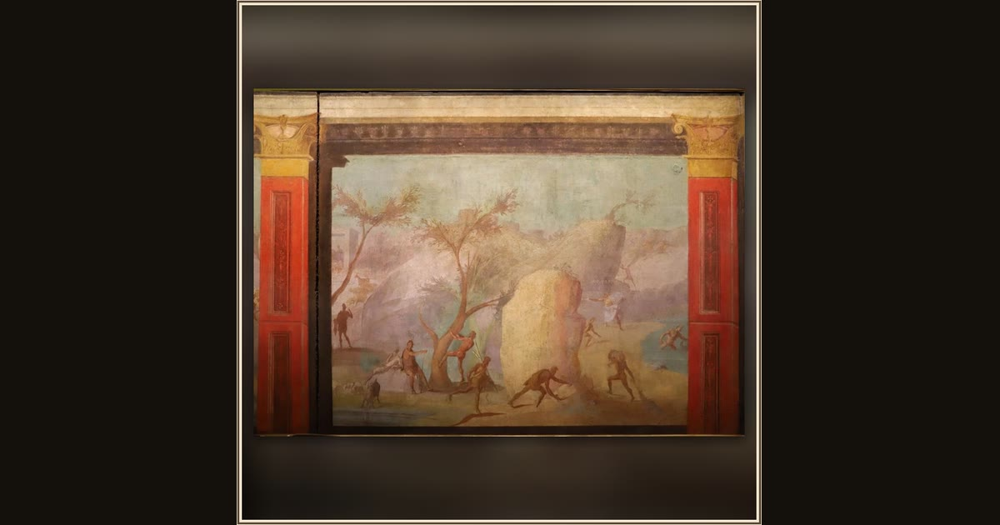

Odyssey Landscapes: The Laestrygonians Attack the Greeks
Roman, Late Republican · c. 50–40 BC · Vatican Museums · Vatican City
Giant cannibals called Laestrygonians hurl rocks down at Ulysses's fleet in the harbor, smashing his ships in this ancient wall painting. Explore its place in Book X of the Odyssey.